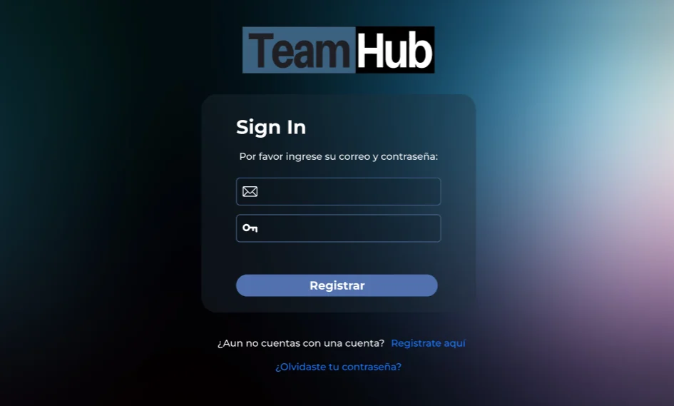
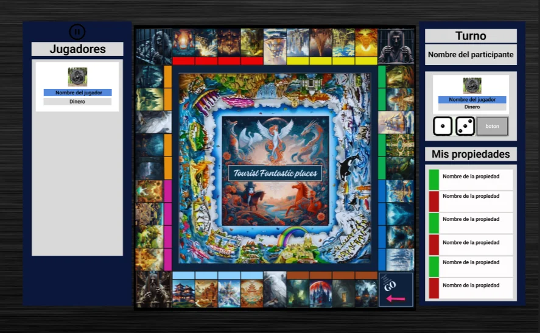
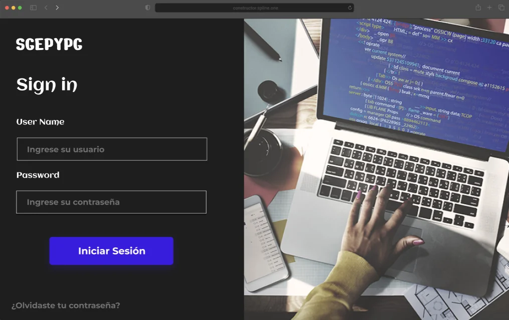
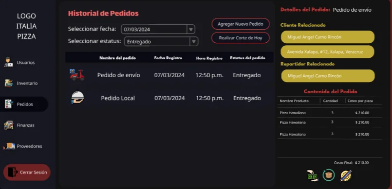
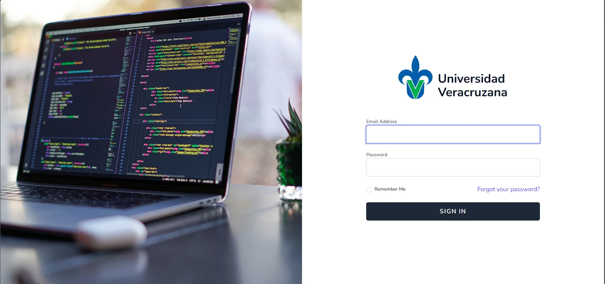

01
Desarrollo full stack
Interfaces web, servicios backend y bases de datos conectados en una misma solución. De los requisitos a la implementación.
mcamo@portfolio:~$ whoami
INGENIERO EN SOFTWARE / XALAPA, MX
Full stack developer.
Software architecture enthusiast.
Me gusta entender cómo funcionan las cosas.
Y construirlas
para que alguien más
también pueda entenderlas.
// del primer componente a la decisión de arquitectura.
Una terminal para explorar este portafolio. / enfocar · Tab completar · ↑ historial
01 / $ cat sobre_mí.md
Soy ingeniero en software por la Universidad Veracruzana. Mi trabajo une el desarrollo de interfaces, la lógica de negocio y la integración de servicios. Me interesa entender el problema antes de elegir la tecnología.
Responsabilidades claras. Decisiones con contexto. Código que otro desarrollador pueda entender, probar y hacer evolucionar.
Conoce mi GitHubInterfaces web, servicios backend y bases de datos conectados en una misma solución. De los requisitos a la implementación.
Análisis de mejoras, migración de funcionalidades y definición de estructuras mantenibles mediante patrones de diseño y arquitectura.
Pruebas automatizadas, seguimiento de errores y validación de correcciones para acompañar la evolución del producto.
02 / $ less experiencia.log
// frontend, backend y evolución técnica en proyectos reales.
Feb 2026 — Actualidad
Universidad VeracruzanaEvolución del frontend con foco en arquitectura, mantenibilidad y calidad.
Ago 2025 — Dic 2025
Universidad VeracruzanaDesarrollo backend de un sistema de gestión y reserva de exámenes por competencias.
Feb 2024 — Jun 2024
Universidad VeracruzanaImplementación y optimización de la lógica de negocio para una plataforma académica.
03 / $ ls -la ./proyectos
5 proyectos visibles

Un ecosistema para la gestión de proyectos académicos, con clientes web y de escritorio e integración de servicios.
Un API Gateway centraliza las solicitudes y las dirige a los servicios correspondientes. Los clientes consumen una entrada común, separando la interfaz de la organización interna del backend.
Explorar el cliente web
Juego de escritorio multijugador con comunicación cliente-servidor, partidas en línea y mensajería entre jugadores.
La interfaz WPF se comunica con el servidor mediante WCF. El servidor coordina la lógica de las partidas y el almacenamiento; el cliente permite crear o unirse a partidas de hasta cuatro jugadores.
Explorar el servidor


Publicación de ofertas, gestión de postulaciones y seguimiento de candidatos en una aplicación web.
Vista del proyecto · Código sin enlace público04 / $ cat stack.conf
Elijo herramientas según el problema, el contexto del equipo y la evolución que necesita el proyecto.
# la herramienta depende del problema05 / $ cat formación.md
Ingeniería en Software · Universidad Veracruzana
Agosto 2021 — Enero 2026
Promedio global
de la carrera
Incluido en las notas laudatorias de Ingeniería de Software de la UV, con promedio de 9.71 en el periodo agosto 2024 — enero 2025 y 9.38 en febrero — julio 2024.
$ ./contacto.sh
¿Un proyecto, un reto técnico o una oportunidad?
miguel_camo@outlook.com